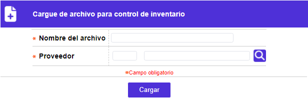

Cargue de archivo para control de inventario
Mediante esta función, se posibilita a la entidad efectuar el cargue del archivo que contiene la información sobre las tarjetas que se encuentran en la etapa de Control de inventario, permitiendo registrar, masivamente, los números preimpresos de cada uno de los plásticos utilizados durante el realce (embosado), y asociarlos con el número de tarjeta correspondiente. El sistema también permite cargar, mediante este archivo, las tarjetas débito y de renovaciones masivas crédito, que no pasan por la etapa de control de inventario pero que, se deben descargar del inventario, cuando la entidad lleva el control de sus plásticos a través de esta funcionalidad provista por el aplicativo, actualizando para éstas el número de plástico.
Con el fin de poder aplicar masivamente el control de inventario a los diferentes plásticos bien sea de tarjetas crédito, débito u otros mediante el presente cargue, se necesita que en la estructura del archivo de realce se parametrice la secuencia para todos los modelos de la entidad.

Descripción de campos
|
Nombre del archivo |
Campo obligatorio de hasta 30 caracteres que permite registrar el nombre que identifica el archivo que contiene la relación de los números de plástico asociados con cada tarjeta y que se va a cargar. |
|
Proveedor |
En este campo obligatorio con lista de valores se selecciona el proveedor a quien corresponde el archivo de tarjetas realzadas que se van a cargar para aplicarles control de inventario. Este dato será utilizado por el sistema para alimentar el campo proveedor en la opción Plasticos en realce y averiados. |